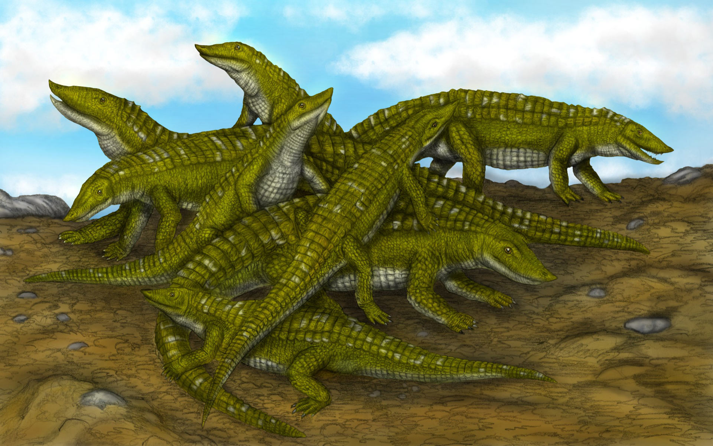
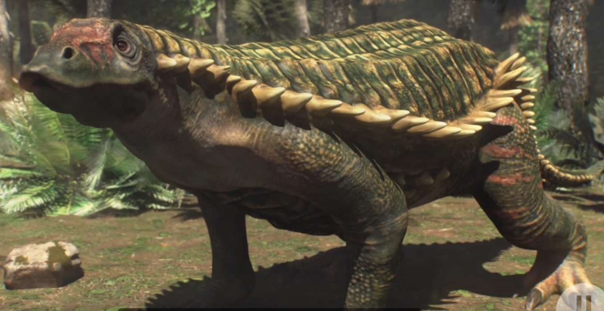
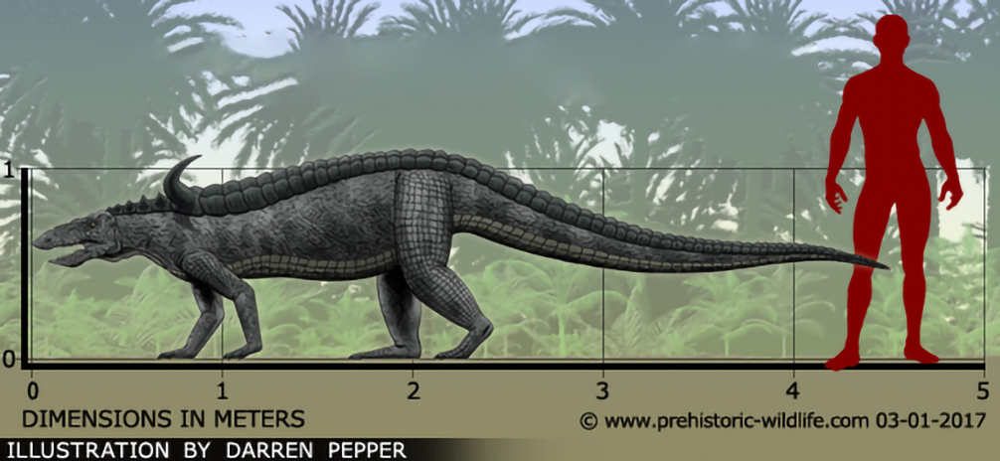
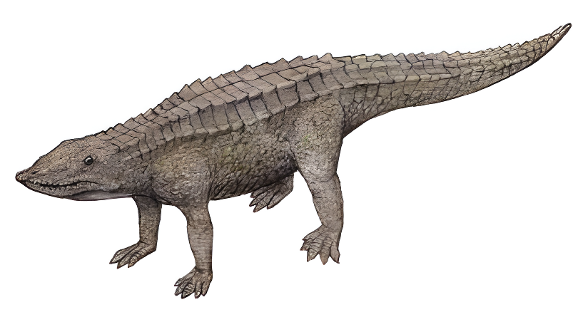
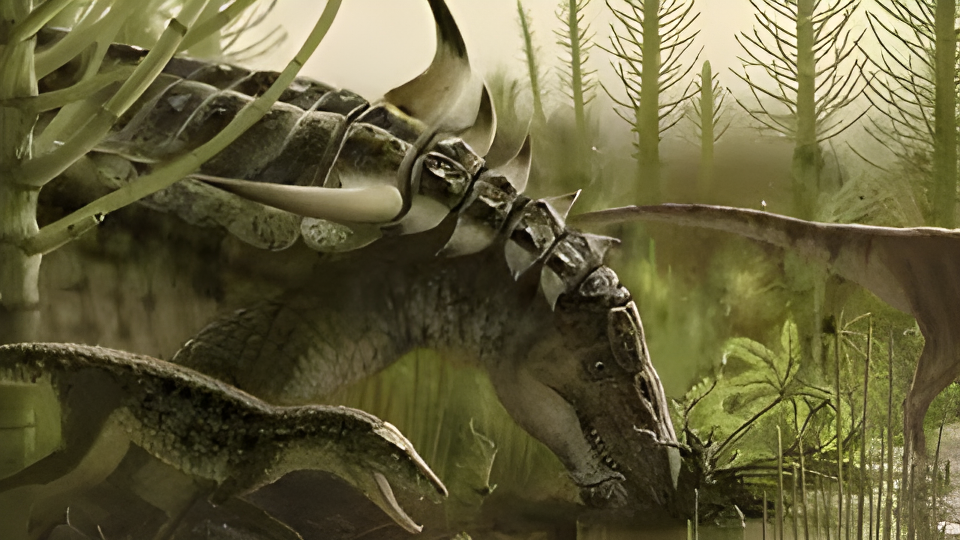
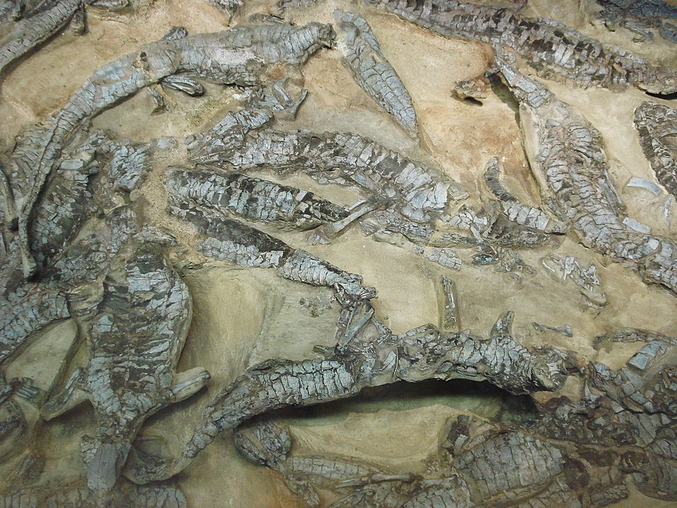
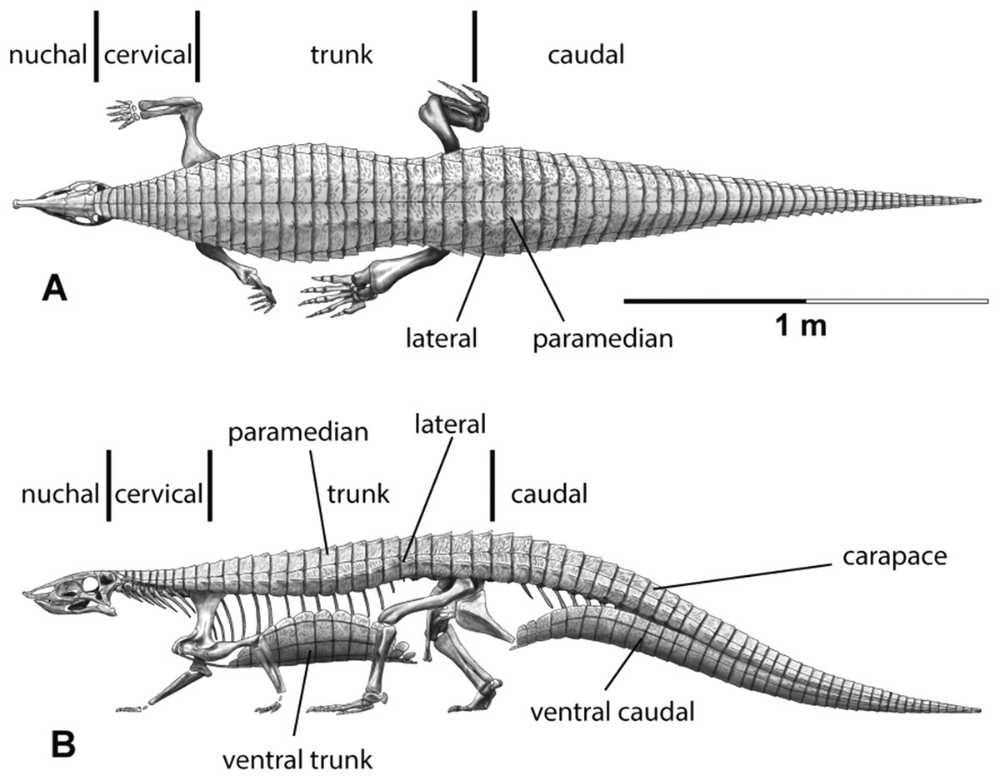

Aetosaurs
Thằn lằn đại bàng kỷ Tam Điệp
Tổng quan
Kỷ
Triassic
Họ
Aetosaurinae
Chi
Aetosaurs
Dài
1.5 m
Nặng
110 kg
Thức ăn


Aetosaurs là một chi thằn lằn chúa đã tuyệt chủng thuộc bộ Aetosauria. Nó thường được coi là Aetosaur nguyên thủy nhất. Ba loài hiện được công nhận: A. Ferratus loài đặc trưng của Đức và Ý; A. Crassicauda từ Đức; và A. Arcuatus từ miền đông Bắc Mỹ.
Nguồn: wikipedia.org
Phân bố
Khu vực Châu Âu, Bắc và Nam Mỹ, một phần Châu Phi và Ấn Độ
Thông tin thêm về Aetosaurs
Kỷ nguyên
Tất cả các loài Aetosaur đã biết chỉ xuất hiện vào cuối kỷ Trias, và trong một số tầng từ thời điểm này, chúng là một trong những loài động vật có xương sống có hóa thạch phong phú nhất. Hóa thạch Aetosaur được biết đến từ Châu Âu, Bắc và Nam Mỹ, một phần Châu Phi và Ấn Độ. Nhiều aetosaur có phạm vi địa lý rộng, nhưng phạm vi địa tầng của chúng tương đối ngắn. Do đó, sự hiện diện của aetosaur cụ thể có thể xác định niên đại chính xác của địa điểm mà chúng được tìm thấy.
Tên khoa học
Được đặt tên bởi nhà cổ sinh vật học người Đức Oscar Fraas vào năm 1877. Aetosaurs - “Thằn lằn đại bàng”, bắt nguồn từ tiếng Hy Lạp cổ trong đó ἀετός (aetos) là "đại bàng" và σαυρος (sauros) là "thằn lằn"
Kích thước
Aetosaurs là một loài khủng long nhỏ, nguyên thủy. Chúng thường phát triển đến chiều dài khoảng 0.9 đến 5 mét, có trọng lượng khoảng 110 đến 280 kg.
Ngoại hình
Aetosaurs có mai dài, hẹp và không có gai. Các vảy paramedian bao phủ lưng (với một hàng ở mỗi bên của các đốt sống) rộng hơn đáng kể so với chiều dài. Các vảy bên, bên dưới đường trung tuyến và tạo thành một hàng ở hai bên của con vật, không có bất kỳ gai hoặc các hình chiếu nào khác.
Hộp sọ của aetosaur tương đối nhỏ so với cơ thể và có hình dạng khá đặc biệt. Không có răng ở cả phía trước xương hàm trên (xương tạo thành chóp mõm) và phía trước xương răng (xương có răng của hàm dưới).
Chế độ ăn
Aetosaurs có những chiếc răng có mặt thường nhỏ và hình củ, từ dạng hình nón cơ bản đến dạng giống như chiếc lá với răng cưa lớn. Đây có thể là dấu hiệu của chế độ ăn tạp hoặc ăn cỏ , và sự thích nghi tương tự cũng được thấy ở các loài thằn lằn chúa khác ít phụ thuộc vào thịt trong chế độ ăn của chúng.
Một số loài aetosaur có răng hình ziphodont, nghĩa là răng mọc ngược, có răng cưa và dẹt từ một bên. Hình dạng này, chiếm ưu thế ở Aetosauroides và một mẫu vật nhỏ tạm thời được gọi là Coahomasuchus, là điển hình của thằn lằn chúa ăn thịt.
Khám phá
Aetosaurus lần đầu tiên được đặt tên, với mô tả về loài điển hình A. ferratus , vào năm 1877 bởi nhà cổ sinh vật học người Đức Oscar Fraas . Vào thời điểm đó, Aetosaurus được biết đến từ 22 bộ xương có khớp nối được tìm thấy ở Lower Stubensandtein của Đức. Ba mươi năm sau, con trai của Fraas là Eberhard đã mô tả loài thứ hai, A. Crassicauda, cũng từ Đức. Loài này có thể được phân biệt với A. Ferratus bởi kích thước lớn hơn.
Năm 1896, nhà cổ sinh vật học Othniel Charles Marsh đặt tên cho Stegomus arcuatus từ một dàn aetosaur được gọi là YPM 1647 từ Hệ tầng New Haven trong khu phố Fair Haven Heights của New Haven. Stegomus arcuatus được cho là đồng nghĩa với Aetosaurus trên cơ sở một số điểm tương đồng, bao gồm việc không có gai và kiểu rãnh xuyên tâm đặc biệt trên một số vảy đuôi.
Áo giáp
Aetosaur được bọc thép rất chắc chắn, với các hàng đĩa xương lớn lồng vào nhau, được gọi là osteoderms , bảo vệ lưng, hai bên, bụng và đuôi. Những lớp xương này thường có hình tứ giác (bốn cạnh) và chắc chắn được sử dụng để bảo vệ chống lại kẻ săn mồi. Hầu hết các osteoderms đều bị rỗ nhiều ở mặt trên và nhẵn ở mặt dưới. Chúng có cấu trúc bên trong không đồng nhất: phần bên trong của mỗi lớp xương được tạo thành từ xương xốp hoặc xốp (còn gọi là xương ngoại giao ) và phần bên ngoài của chúng được tạo thành từ xương đặc.
Khi còn sống, những mảng này có thể được bao phủ bởi một lớp sừng (sừng), giống như vảy cá sấu hiện đại, đó là một ví dụ khác về da giả xương giả. Các lớp vảy xương rất hữu ích trong việc chẩn đoán các loài aetosaur, và các loài aetosaur thường có thể được xác định từ vảy riêng lẻ dựa trên hình dạng, cấu trúc hoặc kiểu trang trí của chúng.